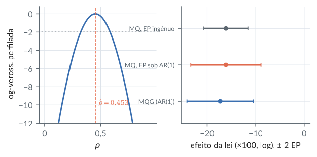
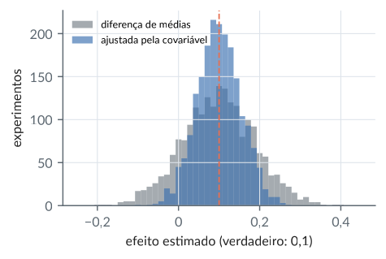

13. Mínimos quadrados generalizados, restrições e o teorema de Frisch–Waugh–Lovell
Material reprodutível do Capítulo 13 do livro.
Exemplos
Mínimos quadrados generalizados: três exemplos pequenos
R/cap13/01_mqg.R
# Cap. 13 -- Mínimos quadrados generalizados: três exemplos pequenos
# (a) Média comum de duas medidas com variâncias 1 e 4
X <- matrix(1, 2, 1); V <- diag(c(1, 4)); Vi <- solve(V)
w <- drop(solve(t(X) %*% Vi %*% X, t(X) %*% Vi)) # pesos de MQG
c(pesos = w, var_mqg = 1 / sum(diag(Vi)),
var_media = sum(diag(V)) / 4)
# (b) MQG = MQ nos dados "branqueados" por L^{-1}, V = LL'
source(file.path("R", "comum", "gerador.R")); g <- gerador(13)
n <- 6; x <- 1:n; X <- cbind(1, x); y <- 1 + 0.5 * x + g$normal(n)
V <- 0.6^abs(outer(1:n, 1:n, "-")) # AR(1) com rho = 0,6
L <- t(chol(V)) # chol devolve L'
b_form <- solve(t(X) %*% solve(V, X), t(X) %*% solve(V, y))
b_branq <- qr.coef(qr(solve(L, X)), solve(L, y))
round(cbind(formula = drop(b_form), branqueado = b_branq), 6)
# (c) Erros equicorrelacionados: com intercepto, MQ = MQG
V <- 0.5 * diag(n) + 0.5 # rho = 0,5
mqg <- function(X) solve(t(X) %*% solve(V, X), t(X) %*% solve(V, y))
mq <- function(X) solve(crossprod(X), crossprod(X, y))
c(com_intercepto = max(abs(mqg(X) - mq(X))),
sem_intercepto = max(abs(mqg(X[, 2, drop = FALSE]) -
mq(X[, 2, drop = FALSE]))))
# Eficiência de MQ para a média sob AR(1), e a cota de Kantorovich
ef <- function(n, rho) { V <- rho^abs(outer(1:n, 1:n, "-"))
u <- rep(1, n); l <- eigen(V, symmetric = TRUE)$values
c(eficiencia = (n^2 / sum(V)) / sum(solve(V, u)),
kantorovich = 4 * max(l) * min(l) / (max(l) + min(l))^2) }
round(rbind("n=50, rho=0,5" = ef(50, .5),
"n=50, rho=0,9" = ef(50, .9)), 4)Saída
pesos1 pesos2 var_mqg var_media
0.80 0.20 0.80 1.25
formula branqueado
3.822410 3.822410
x -0.144821 -0.144821
com_intercepto sem_intercepto
2.220446e-15 3.529313e-01
eficiencia kantorovich
n=50, rho=0,5 0.9879 0.3623
n=50, rho=0,9 0.9061 0.0131python/cap13/01_mqg.py
"""Cap. 13 -- Mínimos quadrados generalizados: três exemplos"""
import sys
from pathlib import Path
import numpy as np
sys.path.insert(0, str(Path(__file__).resolve().parents[1]))
from comum.gerador import Gerador # noqa: E402
# (a) Média comum de duas medidas com variâncias 1 e 4
V = np.diag([1., 4.]); Vi = np.linalg.inv(V); X = np.ones((2, 1))
w = np.linalg.solve(X.T @ Vi @ X, X.T @ Vi).ravel() # pesos de MQG
print(f"pesos {w}, var_mqg {1 / Vi.trace():.2f},"
f" var_media {V.trace() / 4:.2f}")
# (b) MQG = MQ nos dados "branqueados" por L^{-1}, V = LL'
g = Gerador(13)
n = 6; x = np.arange(1., n + 1); X = np.column_stack([np.ones(n), x])
y = 1 + 0.5 * x + g.normal(n)
i = np.arange(n); V = 0.6 ** np.abs(i[:, None] - i) # AR(1), rho 0,6
L = np.linalg.cholesky(V)
b_form = np.linalg.solve(X.T @ np.linalg.solve(V, X),
X.T @ np.linalg.solve(V, y))
b_branq = np.linalg.lstsq(np.linalg.solve(L, X),
np.linalg.solve(L, y), rcond=None)[0]
print(np.column_stack([b_form, b_branq]).round(6))
# (c) Erros equicorrelacionados: com intercepto, MQ = MQG
V = 0.5 * np.eye(n) + 0.5 # rho = 0,5
def mqg(X):
return np.linalg.solve(X.T @ np.linalg.solve(V, X),
X.T @ np.linalg.solve(V, y))
def mq(X):
return np.linalg.lstsq(X, y, rcond=None)[0]
print(f"com intercepto {np.max(np.abs(mqg(X) - mq(X))):.3e},"
f" sem {np.max(np.abs(mqg(X[:, 1:]) - mq(X[:, 1:]))):.4f}")
# Eficiência de MQ para a média sob AR(1), e a cota de Kantorovich
def ef(n, rho):
i = np.arange(n); V = rho ** np.abs(i[:, None] - i)
l = np.linalg.eigvalsh(V)
e = (n**2 / V.sum()) / np.linalg.solve(V, np.ones(n)).sum()
k = 4 * l.max() * l.min() / (l.max() + l.min()) ** 2
return e, k
for rho in [0.5, 0.9]:
print("n=50, rho=%.1f: eficiência %.4f, Kantorovich %.4f"
% (rho, *ef(50, rho)))Saída
pesos [0.8 0.2], var_mqg 0.80, var_media 1.25
[[ 3.82241 3.82241 ]
[-0.144821 -0.144821]]
com intercepto 4.441e-16, sem 0.3529
n=50, rho=0.5: eficiência 0.9879, Kantorovich 0.3623
n=50, rho=0.9: eficiência 0.9061, Kantorovich 0.0131Mínimos quadrados restritos: retornos constantes
R/cap13/02_restricoes.R
# Cap. 13 -- Mínimos quadrados restritos: retornos constantes
source(file.path("R", "comum", "gerador.R")); g <- gerador(1928)
n <- 30 # 30 firmas simuladas
lK <- 2 + g$normal(n); lL <- 3 + 0.8 * lK + 0.6 * g$normal(n)
lQ <- 1 + 0.3 * lK + 0.7 * lL + 0.4 * g$normal(n) # alfa + gama = 1
X <- cbind(1, lK, lL); A <- solve(crossprod(X))
b <- drop(A %*% crossprod(X, lQ)) # irrestrito
K <- c(0, 1, 1); m <- 1 # restrição K'b = m
bK <- b - A %*% K %*% solve(t(K) %*% A %*% K, sum(K * b) - m)
# Conferência: impor a restrição reescrevendo o modelo
r <- coef(lm(I(lQ - lL) ~ I(lK - lL)))
round(rbind(irrestrito = b, restrito = drop(bK),
reescrito = c(r, 1 - r[2])), 4)
s2 <- sum((lQ - X %*% b)^2) / (n - 3)
CK <- A - A %*% K %*% t(K) %*% A / drop(t(K) %*% A %*% K)
round(rbind(ep_irrestrito = sqrt(s2 * diag(A)),
ep_restrito = sqrt(s2 * diag(CK))), 4)
# Aumento da SQRes = (K'b - m)^2 / K'AK
c(dif_SQRes = sum((lQ - X %*% bK)^2) - sum((lQ - X %*% b)^2),
formula = (sum(K * b) - m)^2 / drop(t(K) %*% A %*% K))Saída
lK lL
irrestrito 1.0077 0.3522 0.6815
restrito 1.0753 0.3213 0.6787
reescrito 1.0753 0.3213 0.6787
lK lL
ep_irrestrito 0.3467 0.1383 0.1290
ep_restrito 0.3290 0.1289 0.1289
dif_SQRes formula
0.04871131 0.04871131python/cap13/02_restricoes.py
"""Cap. 13 -- Mínimos quadrados restritos: retornos constantes"""
import sys
from pathlib import Path
import numpy as np
sys.path.insert(0, str(Path(__file__).resolve().parents[1]))
from comum.gerador import Gerador # noqa: E402
g = Gerador(1928)
n = 30 # 30 firmas simuladas
lK = 2 + g.normal(n); lL = 3 + 0.8 * lK + 0.6 * g.normal(n)
lQ = 1 + 0.3 * lK + 0.7 * lL + 0.4 * g.normal(n) # alfa + gama = 1
X = np.column_stack([np.ones(n), lK, lL]); A = np.linalg.inv(X.T @ X)
b = A @ X.T @ lQ # irrestrito
K = np.array([0., 1, 1]); m = 1. # restrição K'b = m
bK = b - A @ K * (K @ b - m) / (K @ A @ K)
# Conferência: impor a restrição reescrevendo o modelo
Z = np.column_stack([np.ones(n), lK - lL])
r = np.linalg.lstsq(Z, lQ - lL, rcond=None)[0]
print("irrestrito", b.round(4))
print("restrito ", bK.round(4))
print("reescrito ", np.array([r[0], r[1], 1 - r[1]]).round(4))
s2 = np.sum((lQ - X @ b) ** 2) / (n - 3)
CK = A - np.outer(A @ K, K @ A) / (K @ A @ K)
print("ep irrestrito", np.sqrt(s2 * np.diag(A)).round(4))
print("ep restrito ", np.sqrt(s2 * np.diag(CK)).round(4))
# Aumento da SQRes = (K'b - m)^2 / K'AK
d = np.sum((lQ - X @ bK) ** 2) - np.sum((lQ - X @ b) ** 2)
f = (K @ b - m) ** 2 / (K @ A @ K)
print(f"dif SQRes {d:.8f}, fórmula {f:.8f}")Saída
irrestrito [1.0077 0.3522 0.6815]
restrito [1.0753 0.3213 0.6787]
reescrito [1.0753 0.3213 0.6787]
ep irrestrito [0.3467 0.1383 0.129 ]
ep restrito [0.329 0.1289 0.1289]
dif SQRes 0.04871131, fórmula 0.04871131Frisch-Waugh-Lovell e o viés de variável omitida (wage1)
R/cap13/03_fwl.R
# Cap. 13 -- Frisch-Waugh-Lovell e o viés de variável omitida (wage1)
w <- read.csv(file.path("dados", "wage1.csv")); y <- log(w$wage)
X1 <- cbind(1, exper = w$exper, tenure = w$tenure) # controles
x2 <- w$educ # de interesse
longo <- lm(y ~ X1 + x2 - 1)
M1 <- function(v) resid(lm(v ~ X1 - 1)) # resíduo em X1
fwl <- lm(M1(y) ~ M1(x2) - 1) # resíduo em resíduo
round(c(longo = coef(longo)[["x2"]], fwl = coef(fwl)[[1]],
so_x2_residualizado = coef(lm(y ~ M1(x2) - 1))[[1]]), 6)
max(abs(resid(longo) - resid(fwl))) # mesmos resíduos
# Erro-padrão: o do FWL usa gl n - 1 em vez de n - 4
n <- length(y)
round(c(ep_longo = summary(longo)$coef["x2", 2],
ep_fwl = summary(fwl)$coef[1, 2],
ep_fwl_corrigido = summary(fwl)$coef[1, 2] *
sqrt((n - 1) / (n - 4))), 6)
# Viés de omissão: curto = longo + delta * (coef. omitido)
curto <- coef(lm(y ~ x2))[["x2"]]
delta <- coef(lm(X1[, 2:3] ~ x2))[2, ] # exper, tenure em educ
b <- coef(longo)
round(c(curto = curto, longo = b[["x2"]],
identidade = b[["x2"]] + sum(delta * b[c("X1exper",
"X1tenure")])), 6)
round(delta, 4)Saída
longo fwl so_x2_residualizado
0.092029 0.092029 0.092029
[1] 1.010303e-14
ep_longo ep_fwl ep_fwl_corrigido
0.007330 0.007309 0.007330
curto longo identidade
0.082744 0.092029 0.082744
exper tenure
-1.4682 -0.1466python/cap13/03_fwl.py
"""Cap. 13 -- Frisch-Waugh-Lovell e o viés de variável omitida"""
from pathlib import Path
import numpy as np
import pandas as pd
raiz = Path(__file__).resolve().parents[2]
w = pd.read_csv(raiz / "dados" / "wage1.csv")
y = np.log(w.wage.to_numpy())
n = len(y)
X1 = np.column_stack([np.ones(n), w.exper, w.tenure]) # controles
x2 = w.educ.to_numpy(float) # de interesse
def mq(X, v): return np.linalg.lstsq(X, v, rcond=None)[0]
def M1(v): return v - X1 @ mq(X1, v) # resíduo em X1
X = np.column_stack([X1, x2]); b = mq(X, y)
f = mq(M1(x2)[:, None], M1(y))[0] # FWL
f2 = mq(M1(x2)[:, None], y)[0]
print(f"longo {b[3]:.6f}, fwl {f:.6f}, só x2 residualizado {f2:.6f}")
e_l = y - X @ b; e_f = M1(y) - f * M1(x2)
print(f"dif. resíduos {np.max(np.abs(e_l - e_f)):.1e}")
# Erro-padrão: o do FWL usa gl n - 1 em vez de n - 4
ep_l = np.sqrt(e_l @ e_l / (n - 4) * np.linalg.inv(X.T @ X)[3, 3])
ep_f = np.sqrt(e_f @ e_f / (n - 1) / (M1(x2) @ M1(x2)))
print(f"ep longo {ep_l:.6f}, fwl {ep_f:.6f},"
f" fwl corrigido {ep_f * np.sqrt((n - 1) / (n - 4)):.6f}")
# Viés de omissão: curto = longo + delta * (coef. omitido)
Z = np.column_stack([np.ones(n), x2])
curto = mq(Z, y)[1]
delta = mq(Z, X1[:, 1:])[1] # exper, tenure
print(f"curto {curto:.6f}, longo {b[3]:.6f},"
f" identidade {b[3] + delta @ b[1:3]:.6f}")
print("delta (exper, tenure):", delta.round(4))Saída
longo 0.092029, fwl 0.092029, só x2 residualizado 0.092029
dif. resíduos 2.6e-15
ep longo 0.007330, fwl 0.007309, fwl corrigido 0.007330
curto 0.082744, longo 0.092029, identidade 0.082744
delta (exper, tenure): [-1.4682 -0.1466]Erros AR(1) na regressão de acidentes (Seatbelts)
R/cap13/04_seatbelts_ar1.R
# Cap. 13 -- Erros AR(1) na regressão de acidentes (Seatbelts)
s <- read.csv(file.path("dados", "seatbelts.csv")); n <- nrow(s)
y <- log(s$motoristas)
X <- cbind(km = log(s$km), preco = log(s$preco_gasolina),
lei = s$lei, model.matrix(~ factor(s$mes) - 1))
p <- ncol(X); A <- solve(crossprod(X))
b <- drop(A %*% crossprod(X, y)); e <- y - X %*% b
c(r1 = sum(e[-1] * e[-n]) / sum(e^2)) # autocorrelação lag 1
# Prais-Winsten: L^{-1} para V_ij = rho^|i-j| / (1 - rho^2)
pw <- function(M, r) { M <- as.matrix(M)
rbind(sqrt(1 - r^2) * M[1, ], M[-1, , drop = FALSE] -
r * M[-nrow(M), , drop = FALSE]) }
perfil <- function(r) { # log-veross. perfilada
z <- pw(y, r); W <- pw(X, r); bz <- qr.coef(qr(W), z)
-n / 2 * log(sum((z - W %*% bz)^2) / n) + log(1 - r^2) / 2 }
grade <- seq(0, 0.95, by = 0.001); ll <- sapply(grade, perfil)
rho <- grade[which.max(ll)]
z <- pw(y, rho); W <- pw(X, rho); Ag <- solve(crossprod(W))
bg <- drop(Ag %*% crossprod(W, z))
s2g <- sum((z - W %*% bg)^2) / (n - p)
# Erros-padrão do coeficiente da lei
V <- rho^abs(outer(1:n, 1:n, "-")) / (1 - rho^2)
s2 <- sum(e^2) / (n - p)
s2V <- sum(e^2) / sum(diag((diag(n) - X %*% A %*% t(X)) %*% V))
ep_sand <- sqrt(diag(s2V * A %*% t(X) %*% V %*% X %*% A))
j <- 3
round(c(rho = rho, mq = b[[j]], ep_ingenuo = sqrt(s2 * A[j, j]),
ep_ar1 = ep_sand[[j]], mqg = bg[[j]],
ep_mqg = sqrt(s2g * Ag[j, j])), 4)
round(100 * (exp(c(mq = b[[j]], mqg = bg[[j]])) - 1), 1) # em %Saída
r1
0.4478874
rho mq ep_ingenuo ep_ar1 mqg ep_mqg
0.4530 -0.1614 0.0227 0.0362 -0.1731 0.0343
mq mqg
-14.9 -15.9python/cap13/04_seatbelts_ar1.py
"""Cap. 13 -- Erros AR(1) na regressão de acidentes (Seatbelts)"""
from pathlib import Path
import numpy as np
import pandas as pd
raiz = Path(__file__).resolve().parents[2]
s = pd.read_csv(raiz / "dados" / "seatbelts.csv"); n = len(s)
y = np.log(s.motoristas.to_numpy(float))
X = np.column_stack([np.log(s.km), np.log(s.preco_gasolina), s.lei,
np.eye(12)[s.mes - 1]])
p = X.shape[1]; A = np.linalg.inv(X.T @ X)
b = A @ X.T @ y; e = y - X @ b
print(f"r1 {e[1:] @ e[:-1] / (e @ e):.7f}") # autocorrelação lag 1
def pw(M, r): # Prais-Winsten: L^{-1}
M = M.reshape(len(M), -1)
return np.vstack([np.sqrt(1 - r**2) * M[:1], M[1:] - r * M[:-1]])
def perfil(r): # log-veross. perfilada
z = pw(y, r).ravel(); W = pw(X, r)
bz = np.linalg.lstsq(W, z, rcond=None)[0]
return -n / 2 * np.log(np.sum((z - W @ bz) ** 2) / n) \
+ np.log(1 - r**2) / 2
grade = np.round(np.arange(0, 0.9505, 0.001), 3)
rho = grade[np.argmax([perfil(r) for r in grade])]
z = pw(y, rho).ravel(); W = pw(X, rho); Ag = np.linalg.inv(W.T @ W)
bg = Ag @ W.T @ z; s2g = np.sum((z - W @ bg) ** 2) / (n - p)
# Erros-padrão do coeficiente da lei
i = np.arange(n); V = rho ** np.abs(i[:, None] - i) / (1 - rho**2)
s2 = e @ e / (n - p)
s2V = e @ e / np.trace((np.eye(n) - X @ A @ X.T) @ V)
ep_sand = np.sqrt(np.diag(s2V * A @ X.T @ V @ X @ A))
j = 2
print(f"rho {rho:.4f}, mq {b[j]:.4f}, ep ingênuo"
f" {np.sqrt(s2 * A[j, j]):.4f}, ep AR(1) {ep_sand[j]:.4f}")
print(f"mqg {bg[j]:.4f}, ep mqg {np.sqrt(s2g * Ag[j, j]):.4f}")
print(f"efeito em %: mq {100 * (np.exp(b[j]) - 1):.1f},"
f" mqg {100 * (np.exp(bg[j]) - 1):.1f}")Saída
r1 0.4478874
rho 0.4530, mq -0.1614, ep ingênuo 0.0227, ep AR(1) 0.0362
mqg -0.1731, ep mqg 0.0343
efeito em %: mq -14.9, mqg -15.9Figura: seatbelts ar1
python/cap13/fig_cap13.py
def fig_seatbelts():
s = pd.read_csv(DADOS / "seatbelts.csv"); n = len(s)
y = np.log(s.motoristas.to_numpy(float))
X = np.column_stack([np.log(s.km), np.log(s.preco_gasolina), s.lei, np.eye(12)[s.mes - 1]])
p = X.shape[1]
def pw(M, r):
M = M.reshape(len(M), -1)
return np.vstack([np.sqrt(1 - r**2) * M[:1], M[1:] - r * M[:-1]])
def perfil(r):
z = pw(y, r).ravel(); W = pw(X, r)
bz = np.linalg.lstsq(W, z, rcond=None)[0]
return -n / 2 * np.log(np.sum((z - W @ bz) ** 2) / n) + np.log(1 - r**2) / 2
grade = np.round(np.arange(0, 0.9505, 0.001), 3)
ll = np.array([perfil(r) for r in grade]); rho = grade[ll.argmax()]
A = np.linalg.inv(X.T @ X); b = A @ X.T @ y; e = y - X @ b
i = np.arange(n); V = rho ** np.abs(i[:, None] - i) / (1 - rho**2)
s2 = e @ e / (n - p); s2V = e @ e / np.trace((np.eye(n) - X @ A @ X.T) @ V)
ep_s = np.sqrt((s2V * A @ X.T @ V @ X @ A)[2, 2])
z = pw(y, rho).ravel(); W = pw(X, rho); Ag = np.linalg.inv(W.T @ W); bg = Ag @ W.T @ z
s2g = np.sum((z - W @ bg) ** 2) / (n - p)
fig, (a1, a2) = plt.subplots(1, 2, figsize=(LARG, 2.3), gridspec_kw={"width_ratios": [1, 1.1]})
a1.plot(grade, ll - ll.max(), color=CATEG[0])
a1.axvline(rho, color=COR["destaque"], lw=0.8, ls="--")
a1.axhline(-1.92, color=COR["cinza"], lw=0.6, ls=":")
a1.set_ylim(-12, 0.8); a1.set_xlabel(r"$\rho$"); a1.set_ylabel("log-veross. perfilada")
a1.text(rho + 0.03, -10, rf"$\hat\rho={rho:.3f}".replace(".", "{,}") + "$", fontsize=7, color=COR["destaque"])
est = [b[2], b[2], bg[2]]; ep = [np.sqrt(s2 * A[2, 2]), ep_s, np.sqrt(s2g * Ag[2, 2])]
nomes = ["MQ, EP ingênuo", "MQ, EP sob AR(1)", "MQG (AR(1))"]
for k, (m_, e_, c) in enumerate(zip(est, ep, [COR["cinza"], CATEG[1], CATEG[0]])):
a2.errorbar(100 * m_, 2 - k, xerr=200 * e_, fmt="o", color=c, ms=4, capsize=2)
a2.set_yticks([2, 1, 0]); a2.set_yticklabels(nomes, fontsize=7); a2.set_ylim(-0.6, 2.6)
a2.axvline(0, color=COR["cinza"], lw=0.5)
a2.set_xlabel("efeito da lei (×100, log), ± 2 EP")
virgula(a1); virgula(a2, "x")
salvar(fig, CAP, "seatbelts_ar1")Trecho de python/cap13/fig_cap13.py, que traz também as importações e o estilo.

Seatbelts. (a) Log-verossimilhança perfilada de \(\rho\), com a linha pontilhada a \(1{,}92\) do máximo (intervalo de \(95\%\) pela razão de verossimilhanças). (b) Coeficiente da lei (\(\times100\)) com \(\pm2\) erros-padrão: mínimos quadrados com o erro-padrão usual, mínimos quadrados com o erro-padrão correto sob AR(1) e mínimos quadrados generalizados factíveis.MQ2E como MQG e o teste de Hausman (dados de Mroz)
R/cap13/05_mroz_hausman.R
# Cap. 13 -- MQ2E como MQG e o teste de Hausman (dados de Mroz)
m <- read.csv(file.path("dados", "mroz.csv"))
y <- m$lwage; n <- length(y); X <- cbind(1, educ = m$educ)
Zs <- list(pai = cbind(1, m$fatheduc),
pai_mae = cbind(1, m$fatheduc, m$motheduc))
bmq <- drop(solve(crossprod(X), crossprod(X, y)))
s2 <- sum((y - X %*% bmq)^2) / (n - 2) # MQ é eficiente sob H0
t(sapply(Zs, function(Z) {
PZ <- Z %*% solve(crossprod(Z), t(Z))
biv <- drop(solve(t(X) %*% PZ %*% X, t(X) %*% PZ %*% y))
# MQG no modelo Z'y = Z'X b + Z'e, com Cov(Z'e) = s2 Z'Z
W <- solve(crossprod(Z))
bg <- solve(t(X) %*% Z %*% W %*% t(Z) %*% X,
t(X) %*% Z %*% W %*% t(Z) %*% y)
vd <- s2 * (solve(t(X) %*% PZ %*% X) - solve(crossprod(X)))[2, 2]
H <- (biv[[2]] - bmq[[2]])^2 / vd
round(c(dif_mqg = max(abs(bg - biv)), mq = bmq[[2]],
mq2e = biv[[2]], ep_dif = sqrt(vd), H = H,
p = pchisq(H, 1, lower.tail = FALSE)), 4)
}))Saída
dif_mqg mq mq2e ep_dif H p
pai 0 0.1086 0.0592 0.0315 2.4618 0.1166
pai_mae 0 0.1086 0.0505 0.0281 4.2856 0.0384python/cap13/05_mroz_hausman.py
"""Cap. 13 -- MQ2E como MQG e o teste de Hausman (dados de Mroz)"""
from pathlib import Path
import numpy as np
import pandas as pd
from scipy import stats
raiz = Path(__file__).resolve().parents[2]
m = pd.read_csv(raiz / "dados" / "mroz.csv")
y = m.lwage.to_numpy(); n = len(y); um = np.ones(n)
X = np.column_stack([um, m.educ])
Zs = {"pai": np.column_stack([um, m.fatheduc]),
"pai_mae": np.column_stack([um, m.fatheduc, m.motheduc])}
bmq = np.linalg.solve(X.T @ X, X.T @ y)
s2 = np.sum((y - X @ bmq) ** 2) / (n - 2) # MQ é eficiente sob H0
for nome, Z in Zs.items():
PZ = Z @ np.linalg.solve(Z.T @ Z, Z.T)
biv = np.linalg.solve(X.T @ PZ @ X, X.T @ PZ @ y)
# MQG no modelo Z'y = Z'X b + Z'e, com Cov(Z'e) = s2 Z'Z
W = np.linalg.inv(Z.T @ Z)
bg = np.linalg.solve(X.T @ Z @ W @ Z.T @ X, X.T @ Z @ W @ Z.T @ y)
vd = s2 * (np.linalg.inv(X.T @ PZ @ X)
- np.linalg.inv(X.T @ X))[1, 1]
H = (biv[1] - bmq[1]) ** 2 / vd
print(f"{nome:8} dif_mqg {np.max(np.abs(bg - biv)):.0e}"
f" mq {bmq[1]:.4f} mq2e {biv[1]:.4f}")
print(f"{'':8} ep_dif {np.sqrt(vd):.4f} H {H:.4f}"
f" p {stats.chi2.sf(H, 1):.4f}")Saída
pai dif_mqg 7e-14 mq 0.1086 mq2e 0.0592
ep_dif 0.0315 H 2.4618 p 0.1166
pai_mae dif_mqg 1e-13 mq 0.1086 mq2e 0.0505
ep_dif 0.0281 H 4.2856 p 0.0384Parcelas subdivididas: MQ = MQG, mas os erros-padrão não
R/cap13/06_aveia_parcelas.R
# Cap. 13 -- Parcelas subdivididas: MQ = MQG, mas os erros-padrão não
a <- read.csv(file.path("dados", "yates_oats.csv"))
a$gen <- factor(a$gen); a$dose <- factor(a$nitro)
a$parcela <- interaction(a$block, a$gen)
a <- a[order(a$parcela, a$nitro), ] # 18 parcelas x 4 doses
X <- model.matrix(~ block + gen * dose, a); y <- a$yield
n <- nrow(X); A <- solve(crossprod(X))
# Componentes de variância pelos quadrados médios dos dois estratos
qm <- function(f) { r <- resid(lm(f, a)); sum(r^2) }
qm_sub <- qm(yield ~ parcela + dose + gen:dose) / 45 # E = s2
qm_par <- (qm(yield ~ block + gen + dose + gen:dose) -
qm(yield ~ parcela + dose + gen:dose)) / 10
# QM das parcelas: E = s2 + 4 sp2
s2 <- qm_sub; sp2 <- (qm_par - qm_sub) / 4
round(c(QM_parcelas = qm_par, QM_subparcelas = qm_sub,
sigma2 = s2, sigma2_p = sp2), 2)
V <- kronecker(diag(18), s2 * diag(4) + sp2) # Cov(y) estimada
bmq <- drop(A %*% crossprod(X, y))
bg <- drop(solve(t(X) %*% solve(V, X), t(X) %*% solve(V, y)))
c(max_dif_mq_mqg = max(abs(bmq - bg)), # Col(VX) em Col(X)?
inclusao = max(abs(V %*% X - X %*% A %*% t(X) %*% V %*% X)))
# Erros-padrão: ingênuo (s2 único) e correto (sanduíche com V)
s2u <- sum((y - X %*% bmq)^2) / (n - ncol(X))
med <- function(g, d) { m <- colMeans(X[a$gen == g &
(if (is.null(d)) TRUE else a$dose == d), ]); m }
L <- rbind(
variedade = med("Marvellous", NULL) - med("GoldenRain", NULL),
dose = (med("GoldenRain", "0.6") + med("Marvellous", "0.6") +
med("Victory", "0.6") - med("GoldenRain", "0") -
med("Marvellous", "0") - med("Victory", "0")) / 3)
C <- A %*% t(X) %*% V %*% X %*% A
round(cbind(estimativa = drop(L %*% bmq),
ep_ingenuo = sqrt(s2u * diag(L %*% A %*% t(L))),
ep_correto = sqrt(diag(L %*% C %*% t(L)))), 3)Saída
QM_parcelas QM_subparcelas sigma2 sigma2_p
601.33 177.08 177.08 106.06
max_dif_mq_mqg inclusao
1.392664e-12 1.932676e-12
estimativa ep_ingenuo ep_correto
variedade 5.292 4.603 7.079
dose 44.000 5.315 4.436python/cap13/06_aveia_parcelas.py
"""Cap. 13 -- Parcelas subdivididas: MQ = MQG, os erros-padrão não"""
from pathlib import Path
import numpy as np
import pandas as pd
raiz = Path(__file__).resolve().parents[2]
a = pd.read_csv(raiz / "dados" / "yates_oats.csv")
a = a.sort_values(["gen", "block", "nitro"]).reset_index(drop=True)
gv, ga = np.unique(a.gen, return_inverse=True)
dv, da = np.unique(a.nitro, return_inverse=True)
bv, ba = np.unique(a.block, return_inverse=True)
y = a["yield"].to_numpy(float); n = len(y)
G = np.eye(3)[ga][:, 1:]; D = np.eye(4)[da][:, 1:]
GD = (G[:, :, None] * D[:, None, :]).reshape(n, -1)
X = np.column_stack([np.ones(n), np.eye(6)[ba][:, 1:], G, D, GD])
A = np.linalg.inv(X.T @ X)
parc = ga * 6 + ba # 18 parcelas
def sqres(M):
r = y - M @ np.linalg.lstsq(M, y, rcond=None)[0]
return r @ r
Xp = np.column_stack([np.eye(18)[parc], D, GD]) # parcelas como fator
qm_sub = sqres(Xp) / 45 # E = s2
qm_par = (sqres(X) - sqres(Xp)) / 10 # E = s2 + 4 sp2
s2 = qm_sub; sp2 = (qm_par - qm_sub) / 4
print(f"QM parcelas {qm_par:.2f}, QM subparcelas {qm_sub:.2f}")
print(f"sigma2 {s2:.2f}, sigma2_p {sp2:.2f}")
V = np.kron(np.eye(18), s2 * np.eye(4) + sp2) # Cov(y) estimada
bmq = A @ X.T @ y
bg = np.linalg.solve(X.T @ np.linalg.solve(V, X),
X.T @ np.linalg.solve(V, y))
incl = np.max(np.abs(V @ X - X @ A @ X.T @ V @ X))
print(f"max dif MQ-MQG {np.max(np.abs(bmq - bg)):.1e},"
f" inclusão {incl:.1e}")
# Erros-padrão: ingênuo (s2 único) e correto (sanduíche com V)
s2u = sqres(X) / (n - X.shape[1])
def med(g, d=None):
ok = (gv[ga] == g) & (True if d is None else (dv[da] == d))
return X[ok].mean(0)
Lv = med("Marvellous") - med("GoldenRain")
Ld = sum(med(g, 0.6) - med(g, 0.0) for g in gv) / 3
C = A @ X.T @ V @ X @ A
for nome, l in [("variedade", Lv), ("dose", Ld)]:
print(f"{nome:9} {l @ bmq:7.3f} ep ingênuo"
f" {np.sqrt(s2u * l @ A @ l):.3f} ep correto"
f" {np.sqrt(l @ C @ l):.3f}")Saída
QM parcelas 601.33, QM subparcelas 177.08
sigma2 177.08, sigma2_p 106.06
max dif MQ-MQG 9.2e-13, inclusão 2.7e-12
variedade 5.292 ep ingênuo 4.603 ep correto 7.079
dose 44.000 ep ingênuo 5.315 ep correto 4.436Ajuste por covariável em testes A/B (CUPED) e FWL
R/cap13/07_cuped.R
# Cap. 13 -- Ajuste por covariável em testes A/B (CUPED) e FWL
source(file.path("R", "comum", "gerador.R"))
um <- function(g, n) { # um experimento simulado
x <- g$normal(n) # métrica pré-teste
t <- as.numeric(g$unif(n) < 0.5) # sorteio do tratamento
yv <- 1 + 0.1 * t + 0.8 * x + 0.6 * g$normal(n)
list(x = x, t = t, y = yv) }
g <- gerador(2013); d <- um(g, 500)
dif <- with(d, mean(y[t == 1]) - mean(y[t == 0]))
aj <- coef(lm(y ~ t + x, d))[["t"]] # regressão com x
th <- with(d, cov(y, x) / var(x)) # CUPED: y - th (x - xbar)
yc <- with(d, y - th * (x - mean(x)))
cup <- mean(yc[d$t == 1]) - mean(yc[d$t == 0])
fwl <- with(d, coef(lm(resid(lm(y ~ x)) ~ resid(lm(t ~ x))))[[2]])
round(c(diferenca = dif, ajustado = aj, cuped = cup, fwl = fwl,
cor_xy = cor(d$x, d$y)), 4)
# 2000 experimentos: variância de cada estimador do efeito
R <- 2000; est <- matrix(NA, R, 2, dimnames = list(NULL,
c("dif", "ajust")))
for (r in 1:R) { d <- um(g, 500)
est[r, ] <- c(mean(d$y[d$t == 1]) - mean(d$y[d$t == 0]),
coef(lm(y ~ t + x, d))[["t"]]) }
v <- apply(est, 2, var)
round(rbind(media = colMeans(est), var = v), 4)
round(c(razao = v[[2]] / v[[1]],
teorica = 0.6^2 / (0.8^2 + 0.6^2)), 4)Saída
diferenca ajustado cuped fwl cor_xy
0.1307 0.1699 0.1698 0.1699 0.8173
dif ajust
media 0.0988 0.1000
var 0.0079 0.0029
razao teorica
0.3699 0.3600python/cap13/07_cuped.py
"""Cap. 13 -- Ajuste por covariável em testes A/B (CUPED) e FWL"""
import sys
from pathlib import Path
import numpy as np
sys.path.insert(0, str(Path(__file__).resolve().parents[1]))
from comum.gerador import Gerador # noqa: E402
def um(g, n): # um experimento simulado
x = g.normal(n) # métrica pré-teste
t = (g.unif(n) < 0.5).astype(float) # sorteio do tratamento
y = 1 + 0.1 * t + 0.8 * x + 0.6 * g.normal(n)
return x, t, y
def mq(X, v): return np.linalg.lstsq(X, v, rcond=None)[0]
def res(v, x): return v - np.column_stack([np.ones(len(x)), x]) \
@ mq(np.column_stack([np.ones(len(x)), x]), v)
def ajustado(x, t, y): # regressão em (1, t, x)
return mq(np.column_stack([np.ones(len(x)), t, x]), y)[1]
g = Gerador(2013); x, t, y = um(g, 500)
dif = y[t == 1].mean() - y[t == 0].mean()
th = np.cov(y, x)[0, 1] / x.var(ddof=1) # CUPED
yc = y - th * (x - x.mean())
cup = yc[t == 1].mean() - yc[t == 0].mean()
ry, rt = res(y, x), res(t, x)
fwl = mq(np.column_stack([np.ones(500), rt]), ry)[1]
print(f"diferença {dif:.4f}, ajustado {ajustado(x, t, y):.4f},"
f" cuped {cup:.4f}")
print(f"fwl {fwl:.4f}, cor_xy {np.corrcoef(x, y)[0, 1]:.4f}")
# 2000 experimentos: variância de cada estimador do efeito
R = 2000; est = np.empty((R, 2))
for r in range(R):
x, t, y = um(g, 500)
est[r] = [y[t == 1].mean() - y[t == 0].mean(), ajustado(x, t, y)]
v = est.var(0, ddof=1)
print(f"médias {est.mean(0).round(4)}, var {v.round(4)}")
print(f"razão {v[1] / v[0]:.4f}, teórica {0.36 / 1.0:.4f}")Saída
diferença 0.1307, ajustado 0.1699, cuped 0.1698
fwl 0.1699, cor_xy 0.8173
médias [0.0988 0.1 ], var [0.0079 0.0029]
razão 0.3699, teórica 0.3600Figura: cuped
python/cap13/fig_cap13.py
def fig_cuped():
g = Gerador(2013)
def um(n):
x = g.normal(n); t = (g.unif(n) < 0.5).astype(float)
return x, t, 1 + 0.1 * t + 0.8 * x + 0.6 * g.normal(n)
um(500) # o mesmo primeiro experimento do script
est = []
for _ in range(2000):
x, t, y = um(500)
Z = np.column_stack([np.ones(500), t, x])
est.append([y[t == 1].mean() - y[t == 0].mean(), np.linalg.lstsq(Z, y, rcond=None)[0][1]])
est = np.array(est)
fig, ax = plt.subplots(figsize=(0.72 * LARG, 2.4))
bins = np.linspace(-0.25, 0.45, 50)
ax.hist(est[:, 0], bins=bins, color=COR["cinza"], alpha=0.55, label="diferença de médias")
ax.hist(est[:, 1], bins=bins, color=CATEG[0], alpha=0.65, label="ajustada pela covariável")
ax.axvline(0.1, color=COR["destaque"], lw=1, ls="--")
ax.set_xlabel("efeito estimado (verdadeiro: 0,1)"); ax.set_ylabel("experimentos")
ax.legend(fontsize=7, frameon=False, loc="upper left")
virgula(ax)
salvar(fig, CAP, "cuped")Trecho de python/cap13/fig_cap13.py, que traz também as importações e o estilo.
